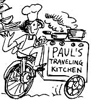

Unemployment can provide a marvelous inspiration for moneymaking ideas. I was, for example, out of work when I began bringing my friend Janet a weekly meal in exchange for the massage therapy she gave my sprained back. Her delighted anticipation of my culinary concoctions-as well as my own financial needs-soon convinced me that I could earn cash by offering a home catering service to the general public!
GOIN' INTO BUSINESS
As anyone who's lived in a commune or extended family (or served as camp chef on Boy Scout excursions) knows, it's almost as easy to fix a meal for 10 people as it is to cook for one. Taking that knowledge one step further, I rightly guessed that preparing 50 or 100 portions would be mostly a matter of having a strong vegetable-chopping elbow, the right-sized pots and utensils, and a system of marketing and distribution.
In my case, the market was my South Brooklyn neighborhood ... which was mostly made up of families in four-story row houses, and-with 50 such buildings per block-I figured I had a high concentration of potential customers. My "delivery system" consisted of nothing more than my trusty bicycle.
To get into business, I invested $50 for bike saddlebags (which gave me great camping options as well) and picked up plastic, reusable containers from a supplier recommended by the local Chinese restaurant. (At $65 for 500, they proved less expensive in the long run than buying the throwaway paper kind.) Another $65spent at the Bowery's used restaurant supply stores-bought me a 32-quart pot, long serving spoons, and a blender that would meet most kitchen needs.
SPREADIN' THE WORD
In order to advertise my new service, I had a friend draw a logo that showed me ;precariously balancing dishes while guiding a stove-equipped bike with the other hand. Using this and a written description of the "healthful, homecooked meals" I'd deliver weekly, I printed up a flyer and posted it in stores and on lampposts. I also invited a reporter from the local paper to taste my fare, which resulted in an article about my business.
That first week was really exciting. When I saw people reading the posters, I'd approach nervously and explain how delicious the food would be. One such person (Lorraine) and I were soon swapping tales of ginger, tamari soy sauce, and garlic. As it turned out, this schoolteacher and her friend Maria were my first-and still totally loyal-customers.
Aside from them, I had only two families sign up that first week. Still, I felt as if all of Brooklyn were watching as I maneuvered my bike down the five flights from my walk-up apartment, rode 30 blocks to the various houses, and handed my steaming rice-and-chicken dish to the hungry recipients. Fortunately, those folks loved my victuals . . . and business went up from there!
THE WAY IT WORKED
For $3.50 ($6.50 for two portions, $3.00 each for three or more) my customers received a generous serving of such main dishes as black-eyed peas, rice, and ham hocks . . . or Chinese braised beef with almonds. I'd also provide a side dish Indonesian cabbage salad with peanut/lemon dressing, for example . . . or Middle Eastern yogurt with string beans, mint, and caraway seeds-and I'd blend special, dry ingredients for an herb tea they could brew to accompany my meal. My vegetables (except for out-of-season tomatoes) would be fresh, and I was careful to grind as many whole spices as possible.
The week's work began on Mondays, when I'd plan menus and shop. Then, that same afternoon, I'd soak beans . . . make yogurt .. . and wash, chop, and cook the vegetables I'd bought earlier in the day.
Getting up at eight on Tuesday morning, I'd cook my meats and sauces. About 5:00 p.m., I'd spoon the food into containers and wobble (with 30 or 45 portions in my saddlebags) to my customers' homes.
Another 20 meals-also prepared on Monday and Tuesday-would rest overnight in the refrigerator to be dropped off on Wednesday afternoon . . . and then I'd have the rest of the week to put up more posters, read through cookbooks and my grandma's recipes, and work at my other love: writing short stories.
HASSLES AND REWARDS
The biggest drawbacks to my business were pedaling up a 40° incline through two feet of the grey slush that New York City calls snow . . . avoiding cars and ravenous dogs . . . and occasionally turning out what I considered to be prize-winning dishes that caused half my customers to cancel. (For some reason, fresh ginger seems to be a "love it or leave it" ingredient!) And, although I prepared what children and parents both called the best lasagna they'd ever tasted, my mix of broccoli and chicken giblets forced me to run a gauntlet of universal disapproval. (I made giant portions of the next dish to compensate!)
Then, too, my culinary emphasis on grains and vegetables was itself "too health-foody" for some folks. Most of my customers, however, were couples who both worked . .. and many possessed a vaguely "alternative culture" sensibility that made them interested in health and taste as well as convenience.
But the thing I liked best about my "restaurant alternative" was the freedom it gave me to learn about cooking . . . to create the best food I possibly could . . . and to clear-in just a few days-the $100 or so a week on which I could comfortably survive.
What I liked least was hustling for customers. With people dropping in and out of the once-a-week service I provided, it was necessary that I both advertise and put up new batches of posters on a regular basis. When they had the space, the two local papers would run ads in exchange for staff dinners, but the barter depended upon their whims, and the usual ad costs of $20 a week required a higher level of customer volume than I could comfortably handle.
Even so, with all its ups and downs, the traveling kitchen supported me successfully for nearly two years. Finally, however, I packed up my pots and moved to Seattle. Of course, the cooking skills and the knowledge of business I gained through the experience are mine to keep . . . and to use again!
WEST-AFRICAN-STYLE
PEANUT CHICKEN
Oneof the dishes that brought rave reviews to Paul's Traveling Kitchen can be prepared as follows:
Steam a medium-sized chicken until you can separate the meat from the bone, then cut it into bite-sized pieces and try them in a few tablespoons of oil into which you've blended several cloves of garlic. Add onions and chopped bell peppers or sliced okra, and-when these are tender-mix in cayenne pepper to taste (be careful, it's powerful!), along with lots of good quality peanut butter (perhaps 3/4 cup). Serve the chicken over brown rice.
Then, ifyou'd like a good side dish or dessert to complement the stew, try Paul's Banana Special: Just slice several bananas lengthwise and place them in a lightly oiled baking dish. Cover the fruit with grated coconut (fresh or dried, as long as it contains no sugar), sprinkle on some lemon juice, and-if you like-add a bit of cinnamon. Bake the bananas at 350°F until they're tender, then serve them either individually or mashed together to make a pudding.
|
 |
|
|